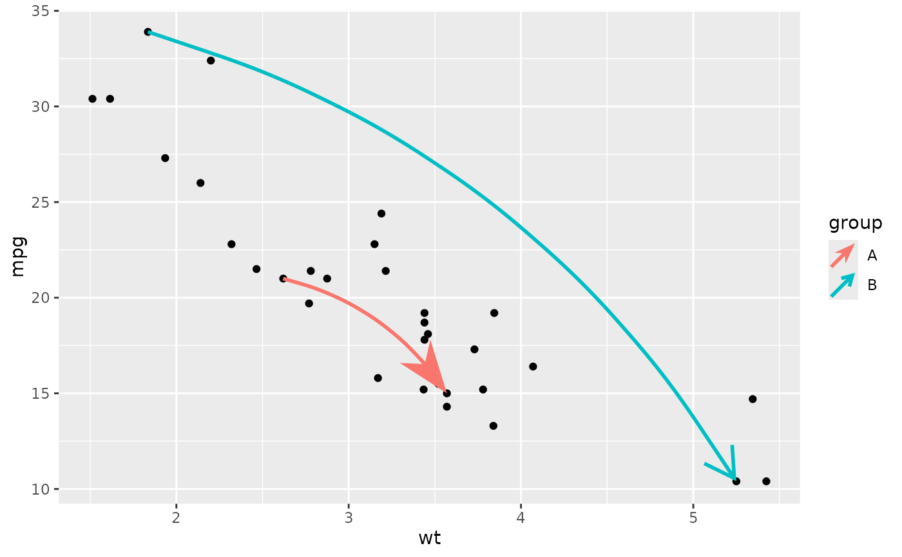

Curves with arrows
geom_arrow_curve.RdThis arrow geom can be used to draw curves from one point to oneanother with arrow heads or fins.
Usage
geom_arrow_curve(
mapping = NULL,
data = NULL,
stat = "identity",
position = "identity",
...,
curvature = 0.5,
angle = 90,
ncp = 5,
arrow_head = arrow_head_wings(),
arrow_fins = NULL,
arrow_mid = NULL,
length = 4,
length_head = NULL,
length_fins = NULL,
length_mid = NULL,
justify = 0,
force_arrow = FALSE,
mid_place = 0.5,
resect = 0,
resect_head = NULL,
resect_fins = NULL,
lineend = "butt",
linejoin = "round",
linemitre = 10,
na.rm = FALSE,
show.legend = NA,
inherit.aes = TRUE
)Arguments
- mapping
Set of aesthetic mappings created by
aes(). If specified andinherit.aes = TRUE(the default), it is combined with the default mapping at the top level of the plot. You must supplymappingif there is no plot mapping.- data
The data to be displayed in this layer. There are three options:
If
NULL, the default, the data is inherited from the plot data as specified in the call toggplot().A
data.frame, or other object, will override the plot data. All objects will be fortified to produce a data frame. Seefortify()for which variables will be created.A
functionwill be called with a single argument, the plot data. The return value must be adata.frame, and will be used as the layer data. Afunctioncan be created from aformula(e.g.~ head(.x, 10)).- stat
The statistical transformation to use on the data for this layer, either as a
ggprotoGeomsubclass or as a string naming the stat stripped of thestat_prefix (e.g."count"rather than"stat_count")- position
Position adjustment, either as a string naming the adjustment (e.g.
"jitter"to useposition_jitter), or the result of a call to a position adjustment function. Use the latter if you need to change the settings of the adjustment.- ...
Other arguments passed on to
layer(). These are often aesthetics, used to set an aesthetic to a fixed value, likecolour = "red"orsize = 3. They may also be parameters to the paired geom/stat.- curvature
A numeric value giving the amount of curvature. Negative values produce left-hand curves, positive values produce right-hand curves, and zero produces a straight line.
- angle
A numeric value between 0 and 180, giving an amount to skew the control points of the curve. Values less than 90 skew the curve towards the start point and values greater than 90 skew the curve towards the end point.
- ncp
The number of control points used to draw the curve. More control points creates a smoother curve.
- arrow_head, arrow_fins, arrow_mid
A function call to one of the arrow ornament functions that can determine the shape of the arrow head, fins or middle (interior) arrows.
- length, length_head, length_fins, length_mid
Determines the size of the arrow ornaments.
lengthsets the default length, whereaslength_head,length_finsandlength_midset the lengths of the arrow head, arrow fins or middle arrows respectively. Can be one of the following:A
<numeric>to set the ornament size relative to thelinewidth{_\*}settings.A
<unit>to control the ornament size in an absolute manner. Behaviour of relative units such as"npc"or"null"is undefined.
- justify
A
numeric(1)between [0-1] to control where the arrows should be drawn relative to the path's endpoints. A value of0sets the arrow's tips at the path's end, whereas a value of1sets the arrow's base at the path's end.- force_arrow
A
logical(1)which, ifTRUEan arrow will be drawn even when the length of the arrow is shorter than the arrow heads and fins. IfFALSE, will drop such arrows.- mid_place
Sets the location of middle (interior) arrows, when applicable. Can be one of the following:
- A
numericvector with values between [0-1] to set middle arrows at relative positions along the arc-length of a path.
- A
<unit> to fill a path with arrows with the provided unit as distance between one arrow to the next.
- A
- resect, resect_head, resect_fins
A
numeric(1)denoting millimetres or<unit>to shorten the arrow.resect_headshortens the arrow from the arrow head side, whereasresect_finsshortens the arrow from the fins side. Both inherit fromresect.- lineend
Line end style (round, butt, square).
- linejoin
Line join style (round, mitre, bevel).
- linemitre
Line mitre limit (number greater than 1).
- na.rm
If
FALSE, the default, missing values are removed with a warning. IfTRUE, missing values are silently removed.- show.legend
logical. Should this layer be included in the legends?
NA, the default, includes if any aesthetics are mapped.FALSEnever includes, andTRUEalways includes. It can also be a named logical vector to finely select the aesthetics to display.- inherit.aes
If
FALSE, overrides the default aesthetics, rather than combining with them. This is most useful for helper functions that define both data and aesthetics and shouldn't inherit behaviour from the default plot specification, e.g.borders().
Aesthetics
geom_arrow() understands the following aesthetics (required aesthetics are in bold):
arrow_finsarrow_headarrow_midresect_finsresect_headstroke_colourstroke_width
Learn more about setting these aesthetics in vignette("ggplot2-specs").
See also
Other arrow geoms:
annotate_arrow(),
geom_arrow(),
geom_arrow_chain(),
geom_arrow_segment()
Examples
curve_data <- data.frame(
x1 = c(2.62, 1.835),
x2 = c(3.57, 5.250),
y1 = c(21.0, 33.9),
y2 = c(15.0, 10.4),
group = c("A", "B")
)
ggplot(mtcars, aes(wt, mpg)) +
geom_point() +
geom_arrow_curve(
aes(x = x1, y = y1, xend = x2, yend = y2,
colour = group, arrow_head = group),
data = curve_data,
curvature = -0.2, length_head = 10
)
